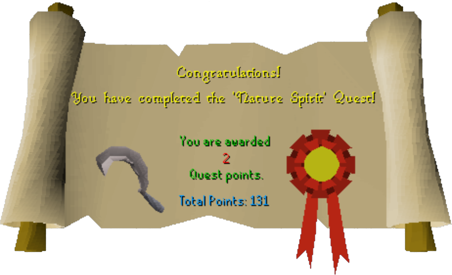

Nature Spirit
Description: After saving the holy man Drezel, he's seeking some assistance again. This time he has a special request for any adventurous sorts to search for the Druid 'Filliman Tarlock' and brave the terrors that infest the swamp of Mort Myre.Difficulty: Novice
Length: Medium
Required Quests:
- Priest In Peril
- Restless Ghost
Items & Skills Needed:
- 18 Crafting
- The ability to defeat a level 30 monster
Reward: 2 Quest points, 2,000 Defence XP, 2,000 Hitpoints XP, 3,000 Crafting XP, a Blessed Silver Sickle, and a Druid Pouch (and with it, the ability to kill Ghasts in swamp)
Instructions:
Talk to Drezel (in the underground section entrence to Morytania).
He will explain that his friend, Filliman, has been missing and needs to be able to help out travelers.
He will explain that his friend, Filliman, has been missing and needs to be able to help out travelers.
Go through the portal into Morytania and to the first south gate.
Run (or walk, easier to have 100% energy) all the way down south-west until you see a small circular island. Run around to the end of it and click "Jump Bridge". If you fail, you will take some damage. (Note: higher agility seems to help you cross without falling, as with all other agility obstacles.)
Pick up the Washing bowl from the bench and a Mirror will appear under it. Take the Mirror. Then search the Grotto for a Journal.
Equip your Ghostspeak amulet and try to enter the Grotto (Click on the black part of the Grotto).
Filliman Tarlock will appear and you have to convince him that he is a ghost, which is finally done by using the mirror on him.
Filliman Tarlock will appear and you have to convince him that he is a ghost, which is finally done by using the mirror on him.
After he finishes talking, use the Journal (or "give" it to him) on him and he'll explain he wants to become a Nature Spirit and will need 3 things.
He will give you a spell and tell you that you need to be blessed.
He will give you a spell and tell you that you need to be blessed.
Go back to Drezel and ask him to bless you. Note that he mentions that you have "Something of the Faith" about you.
Once you are blessed, go back down to the Grotto (Filliman's Home) and talk to him.
Go back into the swamp and walk north-west until you see some rotten logs on ground. Note that these are not items.
Click "Cast Druid Spell" on the scroll Filliman gave to you when you are standing right next to a log and some fungi will appear on the log. Examine the used spell to solve the last of the puzzles.
Pick the Fungi from the log and go back to Filliman.
Use the Fungi with the west stone, the Used Druid Spell with the East Stone, and place yourself on the south stone.
He will then ask you to enter the grotto (right-click the black part and click Enter Grotto).
Search the grotto and Filliman comes out. He will transform himself into a nature spirit.
Then he will explain how to kill the Ghasts, by using a filled druid pouch on them, to materialize them. After that you can kill them normally. He will tell you that you need to make a Silver Sickle so he can bless it for you.
Go to Al Kharid Crafting Shop and buy a Silver Sickle Mould.
Use a Silver Bar with the Furnace and make the Silver Sickle.
Go back to Filliman and talk to him in his Grotto.
He will tell you to dip the sickle into the water and give you a Druid Pouch, telling you that you need to defeat three Ghasts to help him.
Make sure your Sickle is un-equipped, as you can now use it to cast the Bloom Spell.
Go get three more fungi, branch cuttings or golden pears. Fill your druid pouch to make the Ghasts appear.
Kill three Ghasts and go back and talk to him.
Congratulations, Quest Complete!

This quest guide was written by Rekeri. Thanks to Sporhund, Stormer, ossie000, the_peleton, Ju Juitsu, Cricket55416, malku_raj, DRAVAN, trekkie, and SchmackyEvil for corrections.
This quest guide was entered into the RuneHQ.com database on Tue, Jul 13, 2004, at 02:18:08 PM by Pirate Bob49 and CJH and was last updated on Wed, Nov 02, 2005, at 08:37:48 PM by DRAVAN.